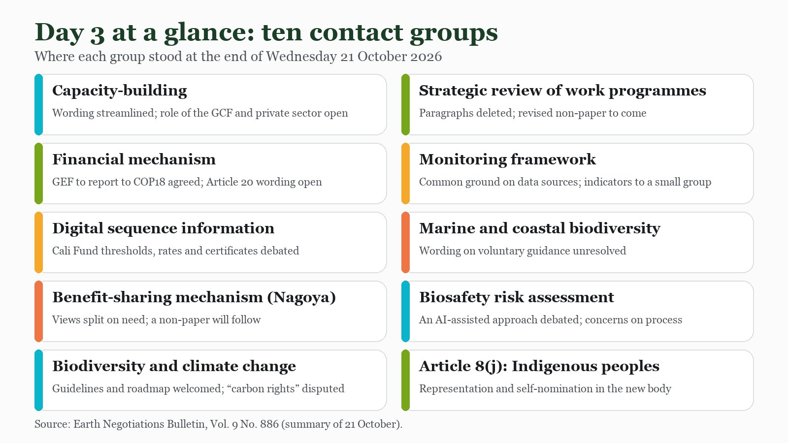

By Wednesday the conference had stopped sounding like a conference and started sounding like a workshop. One delegate, quoted by the Earth Negotiations Bulletin, called it “a giant jigsaw puzzle” after contact groups that ran from morning to late evening. Every piece has to find its place before COP17 can close, and on Day 3 most pieces were still being cut.
The shape of the day
Working Group II spent the morning on two draft decisions, forest biodiversity and invasive alien species. After that, no fewer than ten contact groups met, on capacity-building, the Nagoya benefit-sharing mechanism, the financial mechanism, climate change, the review of work programmes, the monitoring framework, marine biodiversity, biosafety risk assessment, digital sequence information and Indigenous peoples’ representation. Work continued into the evening. The summary below follows the Earth Negotiations Bulletin’s report of the day, supplemented by the UN’s unofficial transcripts.

Working Group II: the forest text and invasive species
The forest decision is a small text with many fault lines. On whether to “welcome” or merely “note” two assessments by the biodiversity science panel IPBES, Russia and Argentina preferred “note”, while Norway, Switzerland, Colombia, the EU and Nigeria wanted “welcome”, so the paragraph stayed in brackets. On trade, the EU proposed that measures be “in line with international agreements” and World Trade Organization rules, Brazil preferred the original Rio Declaration wording, and the text now carries both. On a human-rights-based and gender-responsive approach, the UK and Argentina proposed alternative wording while Namibia preferred the original, and both options remain in brackets. One paragraph did reach consensus, inviting the secretariats of related agreements to contribute to forest biodiversity. The unresolved parts now go to a Friends of the Chair group.
The invasive species text moved further:
- Parties agreed wording recognising the link between invasions of alien species and climate change.
- They agreed to name “women and youth, and other stakeholders” among those encouraged to act.
- A reference to the One Health approach and the Global Action Plan on Biodiversity and Health was reworded after proposals from Russia and the EU.
- Reference to synthetic biology was dropped from the training materials paragraph.
- On technology transfer, the UK, the EU and Japan wanted it on “voluntary and mutually agreed terms”, while Brazil and Indonesia objected, so that phrase stays bracketed.
Money, genetic data and benefit-sharing
The contact groups on finance and benefit-sharing are where the real distance between North and South shows.
- Financial mechanism (co-chaired by China and Germany): delegates agreed to ask the Global Environment Facility to report in detail to COP18 on its biodiversity resources. They still disagree on how to operationalise the Global Biodiversity Framework Fund, on expressing concern at its limited capitalisation, and on references to developed countries’ obligations under Article 20.
- Digital sequence information: the group worked on Cali Fund thresholds and contribution rates, on inviting views on what counts as an “entity” and as “direct and indirect use” of genetic data, and on certificates, including a line that “only” monetary contributions at the agreed rates earn one.
- Nagoya benefit-sharing mechanism: views diverged on whether a global multilateral mechanism is needed at all. Some developed countries questioned it; developing countries supported an intersessional process, stressing sovereign rights and bilateral arrangements. A non-paper will follow.
- Capacity-building: wording on peer-to-peer learning and technical support was agreed, but the role of the Green Climate Fund, private-sector contributions and conditions on the coordination entity remain open.
Climate, review and monitoring
- Biodiversity and climate change: delegates broadly welcomed voluntary guidelines on nature-based solutions and a roadmap on cooperation across the three Rio Conventions, with wide support for peer review of the roadmap. Concerns centred on terms such as “carbon rights”, overlap with climate-treaty mandates, and time to analyse the texts.
- Strategic review: after a long discussion on scope, the group deleted paragraphs on which work programmes to keep or merge. A revised non-paper is coming.
- Monitoring framework: there was common ground on using the full list of agreed data sources, with national reports as the main source, to strengthen future global reviews. A request to the GEF on timely funding for national reports was parked, while delegates generally agreed to start discussing post-2030 arrangements ahead of COP19.
- Article 8(j): the group discussed how Indigenous peoples and local communities should be represented in the new Subsidiary Body, including seats and self-nomination.
Through a child and youth lens
Young people made their case twice on Wednesday: in the negotiating text and at a press conference. In the invasive species text, “women and youth” were written into the list of actors. In the forest text, delegates failed to agree whether a request for countries’ experiences should name “IPLCs, women, youth, and other stakeholders”, or refer, as Russia suggested, to “all relevant stakeholders”. Whether youth are named is the kind of detail that decides whether they have a seat later.
At the press conference “Close the Justice Gap”, the Global Youth Biodiversity Network said the global review discussions are “not as ambitious as we need”, reporting weaker language on transforming economic and financial sectors and objections to inclusive participation across many items, according to the UN’s unofficial transcript. Its asks included direct access to finance for Indigenous peoples, local communities, women and youth, dedicated funding windows, protection for environmental human rights defenders, and keeping the phrase “the value of intergenerational dialogue” in the Article 8(j) text. A GYBN speaker noted that children and youth will live longest with today’s decisions. The transcript does not record a demand specific to children.
As a member of the UNICEF Global Delegation, my thread is to keep asking where children appear in these texts, and to ask for them to be named alongside youth. Wednesday’s texts show it can be done in one phrase, and lost in another.
What to watch tomorrow
- Friends of the Chair talks on the forest decision, especially the stakeholder list and the IPBES wording.
- Revised non-papers from the financial mechanism, strategic review and monitoring groups.
- Whether the DSI group can settle thresholds, rates and the certificate wording.
- Whether the global review text regains the stronger language that GYBN says was weakened.
Follow where I am each day on my COP17 schedule, and the daily news in the Newsroom.
Sources
- Earth Negotiations Bulletin, Vol. 9 No. 886 (2026), UN Biodiversity Conference Highlights: Wednesday, 21 October 2026. https://enb.iisd.org/sites/default/files/2026-10/enb09886e.pdf
- Earth Negotiations Bulletin, Vol. 9 No. 885 (2026), UN Biodiversity Conference Highlights: Tuesday, 20 October 2026. https://enb.iisd.org/sites/default/files/2026-10/enb09885e.pdf
- UN Transcripts (21 Oct 2026), Working Group II (4th meeting), UN Convention on Biodiversity - COP 17. Automatic, unofficial transcript. https://transcripts.un.org/en/asset/k11/k118yuze8c
- UN Transcripts (21 Oct 2026), Press Conference: Close the Justice Gap: Youth Demands for Transformative and Equitable Biodiversity Implementation. Automatic, unofficial transcript. https://transcripts.un.org/en/asset/k1i/k1iho8gidp